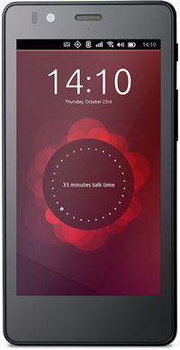
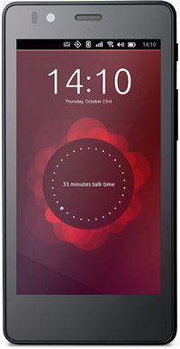

Geschichte von Ubuntu Touch
 
Ubuntu Touch (auch Ubuntu Phone genannt) ist eine Benutzeroberfläche für mobile Endgeräte mit Touchscreen, wie z.B. Smartphones und Tablets.
Angekündigt wurde es im Jahr 2011 durch Mark Shuttleworth

Ubuntu Touch (auch Ubuntu Phone genannt) ist eine Benutzeroberfläche für mobile Endgeräte mit Touchscreen, wie z.B. Smartphones und Tablets.
Angekündigt wurde es im Jahr 2011 durch Mark Shuttleworth  . Die ersten Versionen wurden 2013 veröffentlicht. Als erstes Ubuntu-Phone erschien Anfang 2015 das Aquaris E4.5 Ubuntu Edition von BQ.
. Die ersten Versionen wurden 2013 veröffentlicht. Als erstes Ubuntu-Phone erschien Anfang 2015 das Aquaris E4.5 Ubuntu Edition von BQ.
Ubuntu Touch basiert auf Qt5 und weiteren Komponenten wie ofono und libhybris die zum Teil ursprünglich für Maemo und MeeGo entwickelt wurden. Mit Hilfe von libhybris kann Ubuntu Touch auf Androidgeräte portiert werden.
Hinweis:
Das Projekt wurde 2017 eingestellt (s. Growing Ubuntu for cloud and IoT, rather than phone and convergence ).
Versionsgeschichte¶
Canonical bringt laufend neue Updates für Ubuntu Touch heraus. Diese können über das Internet (Over the Air, OTA) heruntergeladen und auf dem Gerät installiert werden. Die Tabelle listet die wichtigsten Meilensteine auf. Der detaillierte Verlauf der Updates kann auf der Seite der Touch/ReleaseNotes mit detaillierten Changelogs nachgelesen werden.
| Meilensteine | |||
| Jahr | OTA | Version | Bemerkung |
| 07. Februar 2017 | OTA-15 | Nur noch Sicherheitsaktualisierungen, da die Umstellung von Click auf Snap sowie von armhf auf amd64 großen Aufwand bedeutet. | |
| 08. Juni 2016 | OTA-11 | Unterstützung kabelloser externer Displays (Meizu Pro 5) | |
| 18. April 2016 | M10 erscheint als erstes Gerät mit Unterstützung für Desktop Anwendungen. | ||
| 27. Januar 2016 | OTA-9 | 15.04.3 | Aktualisierung auf das nächste Point Release. Details: 250 Bugs. |
| 19. November 2015 | OTA-8 | 15.04.2 | Aktualisierung auf das nächste Point Release. |
| 16. Juni 2015 | OTA-4 | 15.04 | Vivid Vervet wird eingespielt. |
| 16. September 2014 | 14.09 | Ubuntu Utopic Unicorn - Entwicklerzweig, welcher die Basis für die ersten Ubuntu-Phones bietet. | |
| 17. April 2014 | 14.04 | Zweites offizielles Release. Unterstützung gibt es für die Geräte Nexus 4, Nexus 7 (Tablet/2013er-Version) und das Nexus 10 Tablet. | |
| 17. Oktober 2013 | 13.10 | Die erste stabile Version (Phone 1.0) erscheint. Es werden das Galaxy Nexus und das Nexus 4 unterstützt. | |
| 21. Februar 2013 | 12.10 | Veröffentlichung einer ersten Entwicklerversion. | |
Geräte¶
Eine Übersicht der Geräte, welche bisher offiziell mit dem Betriebssystem erschienen sind findet sich in der nachfolgenden Tabelle. Hier werden auch Produkte aufgeführt, welche ggf. beim Hersteller nicht mehr verfügbar sind.
| Geräte | ||||||||||||
| Hersteller | Modell | Typ | Released | Boardname | EAN | SOC | USB | Android | Kernel | Externes Display | Libertine | |
| Kabellos | Kabel | |||||||||||
| Asus | Nexus 7 | Tablet | flo | 32 GB | Qualcomm Snapdragon S4 Pro APQ8064–1AA | 18d1:4ee2 | 3.4.0-5-flo | Slimport | N | |||
| BQ | Aquaris E4.5  | Phone | Feb 2015 | krillin | E4.5 | MediaTek MT6582 | 2a47:2008 (2a47:0c02) | 4? | 3.4.67 | N | N | N |
| BQ | Aquaris E5 | Phone | Juni 2015 | vegatahd | Black / White | MediaTek MT6592 ?, oder MT6582 ? | 2a47:2008 | 3.4.67 | N | N | ||
| BQ | Aquaris M10 HD | Tablet | Apr 2016 | cooler | MediaTek MT8163B | 5.1? | 3.10.93 | Y | micro-HDMI | Y | ||
| BQ | Aquaris M10 FHD | Tablet | Apr 2016 | frieza | FHD | MediaTek MT8163A | 2a47:2008 (2a47:200d) | 5.1? | 3.10.93 | Y | micro-HDMI | Y |
| LG | Nexus 4 | Phone | Okt 2013 | mako | Qualcomm Snapdragon APQ8064 | 4.x | N, community | SlimPort | ||||
| Meizu | MX4 | Phone | Juni 2015 | m75/arale | Silver edge | MediaTek MT6595 | 2a45:0c02 | 4.x | 3.10.35 | N | N | |
| Meizu | Pro 5 | Phone | Feb 2016 | turbo | Samsung Exynos 7420 | 3.10.61 | Y | N | ||||
| Emulator | (ARM) | PC | generic | - | - | - | ||||||
| Emulator | (x86) | PC | generic_x86 | - | - | - | ||||||
Weitere, nicht offiziell unterstützte Geräte, befinden sich in Touch/Devices.

- Erstellt mit Inyoka
-
 2004 – 2017 ubuntuusers.de • Einige Rechte vorbehalten
2004 – 2017 ubuntuusers.de • Einige Rechte vorbehalten
Lizenz • Kontakt • Datenschutz • Impressum • Serverstatus -
Serverhousing gespendet von